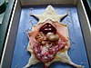

dissection

Definition: Dissection (from Latin dissecare "to cut to pieces"; also called anatomization) is the dismembering of the body of a deceased animal or plant to study its anatomical structure. Autopsy is used in pathology and forensic medicine to determine the cause of death in humans. Less extensive dissection of plants and smaller animals preserved in a formaldehyde solution is typically carried out or demonstrated in biology and natural science classes in middle school and high school, while extensive dissections of cadavers of adults and children, both fresh and preserved are carried out by medical students in medical schools as a part of the teaching in subjects such as anatomy, pathology and forensic medicine. Consequently, dissection is typically conducted in a morgue or in an anatomy lab.
Source: Wikipedia
Wikipedia Page (Something wrong with this association? Let us know.)
Wikidata Page (Something wrong with this association? Let us know.)